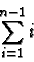
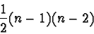

|
In the worst case each item inserted will be compared to the previous
n-1 sorted items. This means the overall time complexity of the
algorithm is:
1 + 2 + 3 + 4 + 5 + 6 ... + (n - 2) + (n - 1)
Rewritten as a sum this is:

Which is a variant of the arithmetic series and reduces to:

By multiplying the above out it becomes clear that this is a O(n2)algorithm.
For best case data, sets that are already sorted, the Insertion
sort runs in linear time. However for average data sets the
efficiency is n2.
|